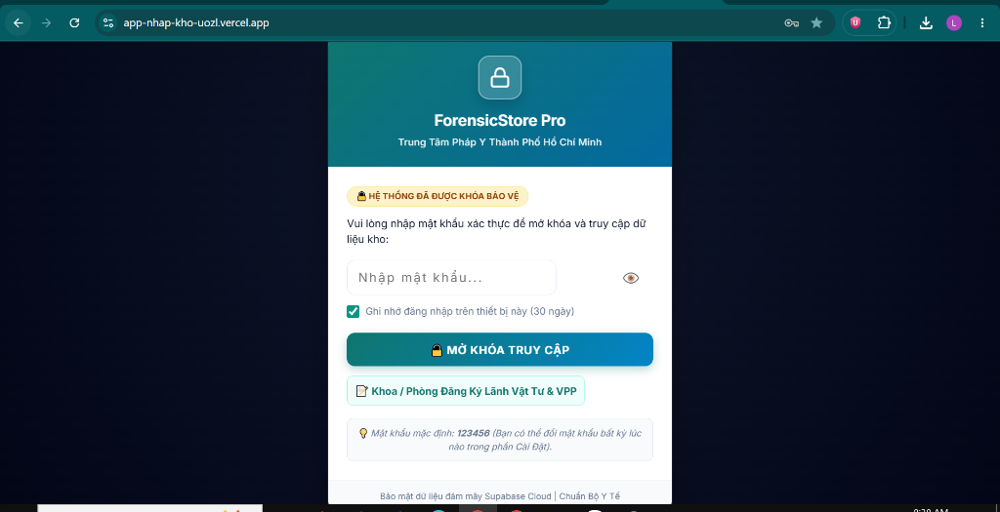
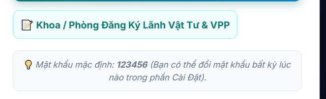
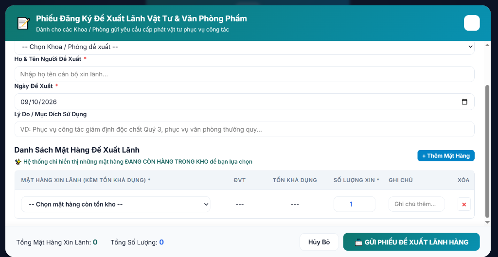

• TRUY CẬP ĐƯỢC TRÊN MỌI THIẾT BỊ: Máy tính bàn khoa phòng, Laptop hoặc Điện thoại thông minh.
• ĐỊA CHỈ TRUY CẬP TRỰC TUYẾN: https://app-nhap-kho-uozl.vercel.app
Bước 1: Mở trang web và chọn nút "Đăng Ký Lãnh Vật Tư & VPP"
1. Dùng trình duyệt (Chrome, Cốc Cốc, Edge, Safari...) truy cập vào địa chỉ: https://app-nhap-kho-uozl.vercel.app
2. Tại màn hình khóa, BỎ QUA Ô NHẬP MẬT KHẨU, bạn chỉ cần nhấp vào nút màu xanh ngọc: 📝 Khoa / Phòng Đăng Ký Lãnh Vật Tư & VPP (nằm ngay phía dưới nút mở khóa).


Bước 2: Điền thông tin Khoa / Phòng & Người đề xuất
Cửa sổ "Phiếu Đăng Ký Đề Xuất Lãnh Vật Tư & Văn Phòng Phẩm" sẽ hiện lên. Bạn vui lòng điền các thông tin hành chính:
- Chọn Khoa / Phòng đề xuất: Chọn đúng tên đơn vị của mình (ví dụ: Khoa Giám định, Khoa Xét nghiệm ADN, Khoa Hóa pháp, Khoa Giải phẫu bệnh, Phòng TC-HC-QT, Phòng KH-TC...).
- Họ & Tên Người Đề Xuất: Nhập họ tên cán bộ trực tiếp xin lãnh (để thủ kho liên hệ bàn giao).
- Ngày Đề Xuất: Mặc định hệ thống tự chọn ngày hiện tại.
- Lý Do / Mục Đích Sử Dụng: Ghi vắn tắt mục đích (ví dụ: Phục vụ ca phẫu nghiệm tử thi, giám định nồng độ cồn Quý 4, in hồ sơ giám định thường quy...).

Bước 3: Chọn danh sách mặt hàng và số lượng cần lãnh
Hệ thống được thiết kế thông minh để tránh việc khoa phòng xin nhầm các món đã hết tồn:
- Mặt hàng xin lãnh: Bấm vào ô danh sách để tìm mặt hàng. Hệ thống chỉ hiển thị những mặt hàng ĐANG CÒN TRONG KHO kèm theo số lượng tồn khả dụng (ví dụ: còn 10 hộp, còn 5 chai...).
- Số lượng xin: Nhập số lượng thực tế khoa phòng cần sử dụng.
- Ghi chú: Điền yêu cầu cụ thể nếu có (VD: Lấy loại nắp đỏ, chai 2.5L...).
- Thêm nhiều mặt hàng: Bấm nút + Thêm Mặt Hàng nếu cần lãnh thêm các vật tư khác trong cùng một đợt.
Bước 4: Bấm gửi và hoàn tất đề xuất
1. Nhìn xuống góc dưới bên trái để kiểm tra lại Tổng Mặt Hàng Xin Lãnh và Tổng Số Lượng.
2. Nhấp vào nút màu xanh: 🗃️ GỬI PHIẾU ĐỀ XUẤT LÃNH HÀNG.
3. Hệ thống sẽ thông báo: "Đã gửi phiếu đề xuất thành công!". Phiếu sẽ tự động được gửi thẳng về hệ thống của Thủ kho (Cử nhân Lê Văn Quý) để phê duyệt và chuẩn bị hàng.